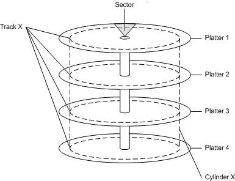

A hard disk consists of a set of stacked platters, each of which has data stored electromagnetically in concentric circles, or tracks. Each platter has two heads, one on each side of the platter, that reads or writes data as the disk spins. A hard disk drive controls the positioning, reading, and writing of the hard disk. Note that the heads of all platters are positioned as a unit.
The smallest addressable unit of a track is a sector. A cylinder is defined as the set of tracks that appear in the same location on each platter. For example, the following diagram shows a hard disk with four platters. Cylinder X consists of eight tracks (track X from each side of each platter).

A hard disk can contain one or more logical regions called partitions. Partitions are created when the user formats a hard disk as a basic disk. Windows also supports dynamic disks, which are not discussed in this topic. For more information about basic disks and dynamic disks, see Basic and Dynamic Disks.
The creation of multiple partitions on a disk allows the appearance of having separate hard drives. For example, a system with one hard disk that has one partition contains a single volume, designated by the system as drive C. A system with a hard disk with two partitions typically contains drives C and D. Having multiple partitions on a hard disk can make it easier to manage the system, for example to organize files or to support multiple users.
The first physical sector on a basic disk contains a data structure known as the Master Boot Record (MBR). The MBR contains the following:
Â
Â